Um metrónomo produz pulsos de duração regular que podem ser ajustados
deslocando um peso na haste que oscila. Os osciladores jogam um papel
muito importante na teoria dos sistemas dinâmicos, como casos típicos
de sistemas lineares.
9.1. Sistemas lineares no plano
Um sistema dinâmico com duas variáveis de estado é definido por duas
equações de evolução com a forma geral 7.2 introduzida
no capítulo 7:
(9.1)
Diz-se que o sistema é linear quando as duas
funções
e
são combinações lineares das variáveis de
estado:
(9.2)
onde
,
,
e
são quatro constantes. As
duas equações de evolução podem ser escritas de forma mais compacta
usando matrizes:
(9.3)
Os pontos de equilíbrio determinam-se substituindo o lado esquerdo da
equação 9.3 por uma matriz com zeros nas duas linhas, dando
um sistema de equações lineares, homogéneo. Um sistema linear
homogéneo tem sempre uma solução, chamada trivial, em que todas as
variáveis são nulas; em alguns casos, quando o determinante da matriz
do sistema é nulo, existem muitas mais soluções. Como tal, quando o
determinante da matriz
é diferente de zero, o sistema
dinâmico tem um único ponto de equilíbrio:
, localizado na
origem do espaço de fase. Nos casos em que o determinante da matriz
é nulo, as derivadas das duas variáveis de estado são a mesma
função, multiplicada por uma constante, e o sistema pode reduzir-se a
um sistema linear com uma única variável de estado e um único ponto de
equilíbrio na origem.
Quando as equações de evolução são combinações lineares das variáveis
de estado mais uma constante, o ponto de equilíbrio já não é a origem
do espaço de fase, mas é possível obter um sistema linear por meio de
uma substituição de variáveis, que corresponde a deslocar a origem
para o ponto de equilíbrio, tal como se mostra no exemplo seguinte.
Exemplo 9.1
As equações de transferência de calor, que determinam as temperaturas
e
em duas divisões de uma casa, são as seguintes:
em que as temperaturas são medidas em graus Celsius e o tempo em
horas. A temperatura exterior é 8 °C. Os termos
e
representam o calor que sai de cada divisão para o
exterior, por unidade de tempo, divididos pelas capacidades
caloríficas de cada divisão. O termo
tem a ver com o
calor que passa de uma divisão para a outra e o termo constante 2 é
devido a que na primeira divisão há um aquecedor ligado que fornece
uma quantidade constante de calor a cada hora. Determine as
temperaturas das duas divisões no estado de equilíbrio e escreva o
sistema de forma linear.
Resolução. Os lados direitos das duas equações diferenciais
definem as componentes da velocidade de fase, no espaço de fase
(
,
). Os pontos de equilíbrio, onde o estado do sistema
permanece constante, são os pontos onde essas duas componentes são
nulas. Usando comando o solve,
ou seja, no estado de equilíbrio as temperaturas das duas divisões são
15.06 °C e 13.88 °C.
Para tornar o sistema linear basta deslocar a origem de coordenadas
para o ponto de equilíbrio. Isso consegue-se definindo duas novas
variáveis:
e nesse sistema de variáveis as equações do sistema são (basta
eliminar os termos constantes no sistema original):
(9.4)
A figura 9.1 mostra as nulclinas, onde cada
uma das componentes da velocidade de fase do exemplo 9.1 é
nula. Na nulclina de
, a derivada
é nula e, portanto,
se o estado inicial fosse um ponto sobre essa reta, a temperatura
permanecia constante e o estado evoluía na direção paralela ao
eixo
. Se o estado inicial estivesse na nulclina de
,
evoluía então na direção paralela ao eixo
. O ponto de equilíbrio
encontra-se na interseção das duas nulclinas. Na região entre as duas
nulclinas, os vetores na figura mostram que a velocidade de fase tem
de apontar na direção do ponto de equilíbrio e o estado deverá
aproximar-se do ponto de equilíbrio; mas será que nas outras regiões o
estado inicial também se aproxima do estado de equilíbrio? na próxima
secção mostra-se um método geral para responder essa questão.
Figura 9.1: Nulclinas e temperaturas de equilíbrio no exemplo 9.1.
Quando as equações de evolução são obtidas a partir de uma única
equação diferencial de segunda ordem,
, o
sistema dinâmico é linear se a função
é uma combinação linear de
e
. Nesse caso, a forma matricial do sistema é
(9.5)
onde
e
são duas constantes.
9.2. Estabilidade dos sistemas lineares
No exemplo 9.1, se as temperaturas de cada divisão atingirem
os valores de equilíbrio, permanecerão constantes. Mas será que as
temperaturas chegam a atingir esses valores? Ou será que enquanto a
temperatura de uma das divisões se aproxima do seu valor de equilíbrio
a outra temperatura afasta-se do seu valor de equilíbrio? E se as
temperaturas inciais estivessem muito próximas dos seus valores de
equilíbrio, será que se aproximarão ainda mais, ou se afastarão desses
valores de equilíbrio?
Nos sistemas analisados no capítulo 7, quando o estado inicial do
sistema está próximo de um ponto de equilíbrio instável, o sistema
pode terminar afastando-se até o infinito, ou afastar-se inicialmente
regressando para o ponto inicial. Se o estado inicial estiver próximo
de um ponto de equilíbrio estável o sistema oscila. No
exemplo 9.1, se existissem ciclos no espaço de fase, existia
a possibilidade de que as duas temperaturas flutuassem de forma
periódica, sem chegar a se estabilizar.
A seguir introduz-se um método geral para analisar a estabilidade dos
sistemas lineares, ou seja, o seu comportamento na vizinhança dos
pontos de equilíbrio. A equação matricial 9.3 pode
interpretar-se como a representação matricial da equação vetorial:
(9.6)
onde a posição
e a velocidade
do estado são
vetores no espaço de fase e
é um operador linear que atua
sobre os vetores do espaço de fase produzindo outros vetores nesse
espaço.
Figura 9.2: Quando a velocidade é na direção do vetor posição, o sistema
aproxima-se ou afasta-se da origem.
Se num instante a velocidade de fase
e o vetor posição no
espaço de fase,
, estão na mesma direção, há duas
possibilidades, tal como mostra a figura 9.2: se os dois
vetores têm sentidos opostos, o estado aproxima-se da origem (ponto de
equilíbrio) e se têm o mesmo sentido, o estado afasta-se da origem. A
condição para que
e
tenham a mesma direção é:
(9.7)
onde
é um número real. Se
é positivo, o sistema
afasta-se-á do ponto de equilíbrio e se
é negativo, o
sistema aproxima-se do ponto de equilíbrio. Substituindo a expressão
anterior na equação 9.6, obtém-se:
(9.8)
Os vetores
que verificam a condição 9.8 chamam-se
vetores próprios do operador
e os respetivos valores
são os
valores próprios do operador.
Exemplo 9.2
Encontre os valores e vetores próprios do sistema linear do
exemplo 9.1.
Resolução. Como as equações de evolução já foram armazenadas
nas variáveis eq1 e eq2, pode usar-se o comando
coefmatrix para obter a matriz do
sistema (equação 9.4):
(%i5)A: coefmatrix ([eq1,eq2],[T1,T2]);
(%o5)
que são as mesmas 4 constantes nas combinações lineares das equações 9.4. O comando
eigenvectors do Maxima determina
os valores e vetores próprios de uma matriz:
(%i6)eigenvectors (A)$ (%i7)float (%);
(%o7)
,
A primeira lista mostra os valores próprios,
e
. A segunda lista são as "multiplicidades" de
cada valor próprio, que neste caso são ambas 1. As últimas duas listas
definem as direções dos vetores próprios correspondentes aos dois
valores próprios; quaisquer vetores na mesma direção de um desses dois
vetores, também é vetor próprio.
Como existem dois valores próprios negativos, existem assim duas
direções no plano de fase em que o estado do sistema aproxima-se do
estado de equilíbrio na origem. Pode obter-se o retrato de fase do
sistema por meio do comando plotdf:
A sintaxe A[i] usa-se para obter a linha
da matriz e o ponto indica produto matricial. A figura 9.3
mostra o retrato de fase.
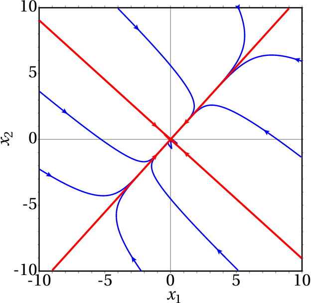
Figura 9.3: Retrato de fase do exemplo 9.1. As duas retas são as
direções dos dois vetores próprios.
As direções dos dois vetores próprios (as duas retas) são traçadas
introduzindo as coordenadas dos vetores próprios obtidos no resultado
(%o7), no campo "Trajectory at" do menu de configuração e
introduzindo as mesmas coordenadas com sinais opostos. Se o estado
inicial não estiver sobre uma das direções dos vetores próprios, a
curva de evolução aproxima-se rapidamente do vetor próprio com menor
valor próprio em valor absoluto.
Observe-se que as duas nulclinas representadas na figura 9.1
encontram-se aos dois lados da reta com declive positivo, no retrato
de fase 9.3 e cruzam-se na origem, onde foi deslocado o
ponto de equilíbrio.
Se as temperaturas nos dois quartos forem iguais à temperatura
exterior,
, então os valores iniciais das variáveis
e
serão
e
. A curva de evolução no espaço de
fase e a evolução das temperaturas em função do tempo podem ser traçadas
com o comando seguinte:
O resultado mostra-se na figura 9.4. Os gráficos em função
do tempo mostram que após 30 horas, as duas temperaturas atingem
praticamente os valores de equilíbrio.
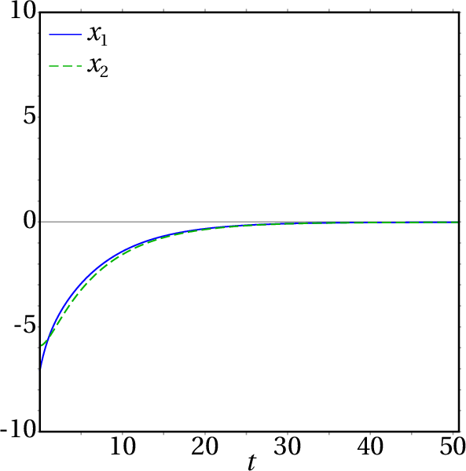
Figura 9.4: Curva de evolução e temperaturas em função do tempo, quando as
duas temperaturas iniciais são de 8 °C.
9.3. Classificação dos pontos de equilíbrio
A forma geral de um sistema dinâmico linear, com qualquer número de
variáveis, é:
(9.9)
em que
é a posição do sistema no espaço de fase e
é um operador linear. Num espaço de fase com duas
variáveis de estado
e
, a representação matricial da
equação 9.9 é a equação 9.3.
Se o determinante da matriz
é diferente
de zero, existe um único ponto de equilíbrio, na origem:
. A existência de valores próprios da matriz
implica existência de direções em que o estado
aproxima-se ou afasta-se em linha reta do ponto de equilíbrio. Os
valores próprios da matriz
são os valores
que
verificam a equação 9.8. No espaço de fase com duas
variáveis, essa equação conduz a:
(9.10)
Calculando o determinante, obtêm-se a seguinte equação
quadrática, chamada equação caraterística:
(9.11)
onde
é o traço
da matriz e
é o determinante. As duas raízes da equação caraterística são:
(9.12)
Se as raízes forem números complexos, significará que não existem
vetores próprios no espaço de fase (
,
). Se existir uma
única raiz real, existirá pelo menos um vetor próprio no espaço de
fase e se existirem duas raízes reais diferentes, existirão dois
vetores próprios linearmente independentes no espaço de fase.
9.3.1. Pontos de sela
Quando o determinante
é negativo, a expressão
dentro da raíz na equação 9.12 é positiva e
(9.13)
Isso implica que existem dois valores próprios reais,
e
, com sinais diferentes, um deles positivo e o outro
negativo.
A esses dois valores próprios correspondem dois vetores próprios
linearmente independentes, que definem duas direções no espaço de fase
onde o sistema evolui ao longo de uma reta (ver
figura 9.5). Na direção correspondente ao valor próprio
negativo, o sinal negativo implica que o estado se aproxima da
origem. Na direção associada ao valor próprio positivo, o sinal
positivo implica que o estado se afasta da origem.
Figura 9.5: Ponto de sela: existem duas direções em que o estado evolui
em linha reta, num dos casos afastando-se da origem e no outro caso
aproximando-se.
As outras curvas de evolução do sistema serão todas curvas que se
aproximam da origem durante algum tempo, mas acabam sempre por se
afastar até o infinito (figura 9.5). A denominação desse
tipo de ponto de equilíbrio é ponto de sela.
Trata-se de pontos de equilíbrio instável.
Observe-se que nos pontos de sela, apesar de existirem curvas de
evolução que começam ou terminam nesse ponto, não podem existir
órbitas homoclínicas porque essas curvas de evolução são retas que se
estendem até infinito. As órbitas homoclínicas só aparecem nos
sistemas não lineares. As órbitas heteroclínicas também não aparecem
nos sistemas lineares porque precisam, pelo menos, de dois pontos de
equilíbrio, mas os sistemas lineares têm um único ponto de equilíbrio.
9.3.2. Nós estáveis e instáveis
Quando o determinante
é positivo mas menor que
, existem duas soluções reais da
equação 9.12, ambas com o mesmo sinal de
.
Se os dois valores próprios são negativos, existem duas direções no
espaço de fase em que o estado se aproxima do ponto de equilíbrio
(lado esquerdo da figura 9.6); devido à continuidade das
curvas de evolução do sistema, qualquer outra curva de evolução será
uma curva que se aproxima do ponto de equilíbrio. A denominação do
ponto de equilíbrio é nó estável,
ou nó atrativo.
Figura 9.6: Quando existem dois valores próprios reais, diferentes, com o
mesmo sinal, o ponto de equilíbrio é um nó, estável (esquerda) ou
instável (direita).
Se os dois valores próprios são positivos, existem duas direções no
espaço de fase em que o estado se afasta do ponto de
equilíbrio. Qualquer que seja o estado inicial, o sistema sempre se
afasta do ponto de equilíbrio (lado direito da figura 9.6) e
o ponto chama-se nó instável,
ou nó repulsivo.
9.3.3. Focos e centros
Quando o determinante
é maior que
, as duas soluções da
equação 9.12 são números complexos
. Isso quer dizer que não existem curvas
de evolução que sejam retas.
O sinal da parte real das soluções complexas da equação 9.12
determina se as curvas de evolução se aproximam ou afastam do ponto de
equilíbrio. Se a parte real das raízes é negativa (matriz com traço
negativo), as curvas de evolução do sistema são espirais que se
aproximam do ponto de equilíbrio (lado esquerdo
da figura 9.7) e o ponto de equilíbrio é designado de
foco estável, ou foco atrativo.
Figura 9.7: Quando os valores próprios são complexos, o ponto de equilíbrio
é um foco, estável (esquerda) ou instável (direita).
Se a parte real das raízes é positiva (matriz com traço positivo), as
curvas de evolução do sistema afastam-se do ponto de equilíbrio,
formando espirais (lado direito da figura 9.7) e o ponto de
equilíbrio é designado de foco instável, ou foco repulsivo.
Se o traço da matriz é nulo, as soluções da equação 9.12 são
dois números imaginários puros, com a mesma parte imaginária mas com
sinais opostos. Nesse caso todas as curvas de evolução do sistema são
ciclos e o ponto de equilíbrio, estável, chama-se
centro.
A figura 9.8 apresenta um sumário dos diferentes tipos de
ponto de equilíbrio, em função do traço e o determinante da matriz do
sistema.
Figura 9.8: Tipos de ponto de equilíbrio de um sistema dinâmico linear com duas
variáveis de estado.
9.3.4. Nós próprios e impróprios
Quando o determinante
é exatamente igual
(pontos na parábola na
figura 9.8), existe unicamente um valor próprio real.
Essa situação conduz a dois tipos diferentes de ponto de
equilíbrio. Se a matriz é diagonal, os elementos na diagonal são ambos
iguais ao valor próprio e qualquer vetor do espaço de fase é vetor
próprio da matriz. Isso implica que todas as curvas de evolução do
sistema são retas que passam pela origem, afastando-se, se o valor
próprio é positivo (lado esquerdo na figura 9.9) ou
aproximando-se, se o valor próprio é negativo. O ponto de equilíbrio
denomina-se nó próprio, estável
ou instável, dependendo do sinal do valor próprio.
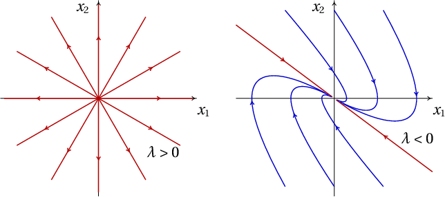
Figura 9.9: Retratos de fase de um nó próprio instável (esquerda) e de um
nó impróprio estável (direita).
Na segunda situação possível, quando a matriz não é diagonal, existe
uma única reta no retrato de fase e o ponto de equilíbrio chama-se
nó impróprio. Existem
unicamente duas curvas de evolução retas, ambas na mesma direção;
todas as outras curvas de evolução acumulam-se nessa direção. Se o
valor próprio é negativo, o nó impróprio é estável (lado direito na
figura 9.9) e se o valor próprio é positivo o ponto de
equilíbrio é um nó impróprio instável.
Uma forma conveniente de identificar o tipo de equilíbrio num sistema
linear é a seguinte: se a matriz é diagonal, os elementos na diagonal
são os valores próprios. Se os dois valores próprios na diagonal são
iguais, o ponto é um nó próprio, instável se o valor próprio é
positivo ou estável se o valor próprio é negativo; nesse caso qualquer
vetor no plano de fase é vetor próprio.
Se a matriz não é diagonal, escreve-se a equação caraterística
9.11 e encontram-se os valores próprios. Em função dos
valores próprios obtidos, usa-se a tabela 9.1 para
classificar o ponto de equilíbrio.
Tabela 9.1: Classificação dos pontos de equilíbrio dos sistemas lineares.
Valores próprios λ
Tipo de ponto
Estabilidade
2 reais; sinais opostos
ponto de sela
instável
2 reais, positivos
nó repulsivo
instável
2 reais, negativos
nó atrativo
estável
2 complexos; parte real positiva
foco repulsivo
instável
2 complexos; parte real negativa
foco atrativo
estável
2 imaginários
centro
estável
1 real, positivo
nó impróprio repulsivo
instável
1 real, negativo
nó impróprio atrativo
estável
9.3.5. Sistemas lineares conservativos
Nos sistemas lineares e conservativos, a condição 7.14 de que
a divergência é nula implica, a partir das equações 9.2,
(9.14)
ou seja, o traço da matriz do sistema,
, é
nulo e, de acordo com o gráfico 9.8, o ponto de equilíbrio
na origem pode ser unicamente um centro, se for estável, ou um ponto
de sela, se for instável. Os sistemas lineares conservativos nunca têm
nem nós nem focos.
9.4. Osciladores lineares
Nos sistemas mecânicos com um único grau de liberdade
, a equação
de movimento conduz a um sistema dinâmico linear quando é uma
combinação linear de
e
:
(9.15)
onde
e
são constantes. O termo
é a componente
tangencial da força conservativa, dividida pela massa
e o termo
é a componente tangencial da força não conservativa, dividida
por
.
Exemplo 9.3
Um oscilador invertido é um
sistema com equação de movimento
, onde
é uma
constante positiva. Analise a estabilidade do sistema e represente o
retrato de fase em unidades em que
.
Resolução. As variáveis de estado são
e
e a forma
matricial das equações de evolução (equação 9.5) é:
O traço da matriz é nulo e o seu determinante é igual a
, que é
negativo. Assim sendo, a equação caraterística é
e os
valores próprios são
e
. De acordo com a
tabela 9.1 o ponto de equilíbrio na origem é um ponto de
sela (instável).
O retrato de fase, no caso
, constrói-se com o comando:
(%i11)plotdf ([v, s], [s, v])$
A figura 9.10 mostra o gráfico obtido, após traçar
manualmente algumas trajetórias.
Figura 9.10: Retrato de fase do oscilador invertido.
Exemplo 9.4
Analise a estabilidade e as curvas de evolução de um oscilador
harmónico simples.
Resolução. O oscilador harmónico simples foi estudado na
secção 6.4, onde se mostra que a equação de movimento é
(equação 6.31):
onde
é uma constante positiva.
Essa equação de movimento conduz ao sistema dinâmico:
O traço da matriz é zero e o determinante é
, que é positivo.
Consequentemente, os valores próprios são dois números imaginários
puros:
e o ponto de equilíbrio é um centro.
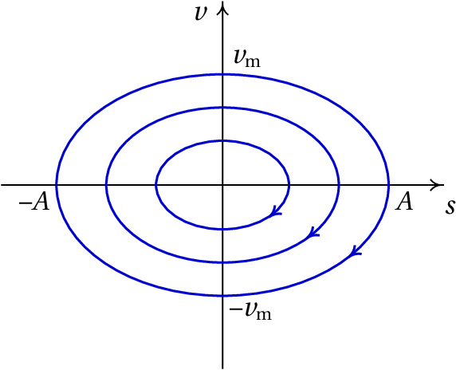
Figura 9.11: As curvas de evolução dum oscilador harmónico simples são todas ciclos.
Se o oscilador estiver inicialmente no estado de equilíbrio,
,
permanecerá em repouso; caso contrário, a curva de evolução será uma
elipse (figura 9.11), que corresponde a um movimento
harmónico simples com frequência angular
. Isto é,
sempre que os valores próprios de um sistema linear de duas variáveis
sejam imaginários puros, o sistema é um oscilador harmónico simples,
com frequência angular
igual ao módulo dos valores próprios,
|. No caso de um corpo de massa
ligado a uma mola com
constante elástica
, a constante
é
e a frequência angular
é
.
9.4.1. Osciladores amortecidos
O oscilador harmónico simples do exemplo 9.4 é um sistema
idealizado, pois na prática existem forças dissipativas.
Um exemplo é o sistema de amortecimento de um automóvel
(figura 9.12). Cada roda está ligada à carroçaria por meio
de uma mola elástica; no interior de cada mola há um cilindro
(amortecedor) com um pistão que se desloca dentro de óleo.
Figura 9.12: Sistema de suspensão de um automóvel.
Se
for a altura do ponto da carroçaria onde está apoiado o
amortecedor, medida desde a posição de equilíbrio
, a força
vertical resultante sobre a carroçaria é:
(9.16)
em que
e
são constantes positivas;
é a constante elástica
da mola e
depende do tamanho do pistão e do coeficiente de
viscosidade do óleo dentro do amortecedor.
Essa força conduz ao seguinte sistema linear:
(9.17)
onde
é a frequência angular,
, e
é igual a
.
O traço da matriz do sistema é
, negativo, e o determinante
é
, positivo. Assim sendo, os valores próprios são ou
números reais negativos ou números complexos com parte real
negativa. Isso implica que o sistema é sempre estável, acabando por
ficar em repouso em
e
.
No entanto, a forma como o sistema se aproxima do ponto de equilíbrio
dependerá do tipo de ponto. Diz-se que o amortecimento é fraco
quando,
(9.18)
e nesse caso os valores próprios são complexos; a matriz do sistema
está na região dos focos estáveis na figura 9.8. A evolução
de
em função do tempo é um movimento oscilatório com amplitude
decrescente, como mostra a figura 9.13.
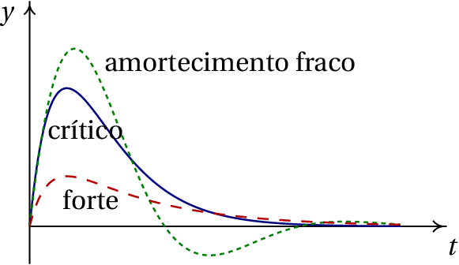
Figura 9.13: Variação da altura
em função do tempo, para os três
tipos de amortecimento.
No caso em que:
(9.19)
diz-se que há amortecimento crítico.
Nesse caso existe um único valor próprio real. Como a matriz não é
diagonal, o ponto de equilíbrio é um nó impróprio estável. A evolução
de
em função de
é apresentada na figura 9.13.
Finalmente, no caso de amortecimento forte,
(9.20)
existem dois valores próprios diferentes e negativos. O ponto de
equilíbrio é um nó estável e
aproxima-se mais rapidamente do ponto
de equilíbrio (figura 9.13).
O sistema de suspensão deve garantir que o sistema se aproxime
diretamente do equilíbrio sem passar várias vezes por esse ponto, o
que tornava o automóvel muito inseguro. Como tal, o amortecimento deve
ser suficientemente forte para que o ponto de equilíbrio seja um nó.
Com o uso, a sujidade e as impurezas no óleo dentro dos amortecedores
do automóvel fazem com que o coeficiente de viscosidade diminua; há
também perdas de óleo. Esses fatores reduzem o valor da constante
por baixo do valor crítico. Se, empurrando a carroçaria do
automóvel para baixo, o automóvel oscila ligeiramente, está na altura
de substituir os amortecedores.
Perguntas
(Para conferir a sua resposta, clique nela.)
Quantas dimensões tem o espaço de fase de um oscilador harmónico simples
em três dimensões
?
1
2
3
4
6
Os valores próprios de um oscilador harmónico simples são
e
(em unidades SI). Calcule o
período de oscilação, em segundos.
Se
é a componente tangencial da força resultante sobre
uma partícula,
é a posição na trajetória e
a velocidade,
qual das seguintes expressões conduz a um sistema linear?
O espaço de fase de um sistema é o plano
. Qual pode ser
a equação diferencial associada a esse sistema?
A matriz de um sistema linear de segunda ordem tem traço igual a 4 e
determinante igual a 3. Que tipo de ponto de equilíbrio é a origem?
nó instável
nó estável
ponto de sela
foco instável
foco estável
Problemas
Em cada caso, use o Maxima para encontrar os valores e vetores
próprios do sistema. Diga que tipo de ponto de equilíbrio tem cada
sistema e represente os retratos de fase.
(a)
(b)
(c)
A figura mostra a curva de evolução hipotética de uma bola que cai em
queda livre e é disparada para cima novamente após ter batido no chão,
se não existisse nenhuma força dissipativa. A parte do gráfico para
valores positivos de
corresponde ao lançamento vertical de um
projétil, ignorando a resistência do ar. A parte do gráfico para
valores negativos de
corresponde à deformação elástica da bola
quando choca com o chão; durante o tempo de contacto com o chão,
admite-se que o movimento vertical da bola é um movimento harmónico
simples, sem dissipação de energia.
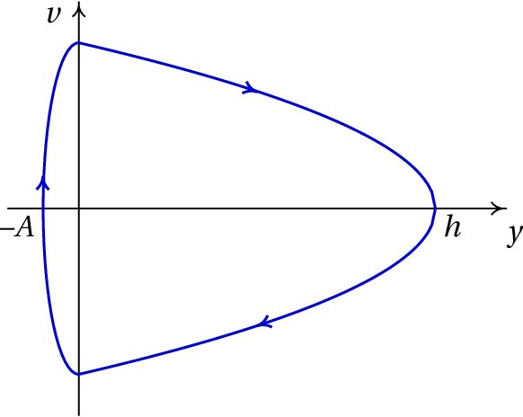
Sabendo que a altura máxima atingida pela bola é
m e que a
deformação máxima quando a bola bate no chão é
cm, determine:
(a) A velocidade máxima da bola ao longo do seu movimento.
(b) A frequência angular da deformação elástica da bola.
(c) O tempo que a bola permanece em contacto com o chão.
Um bloco com massa
kg que se encontra sobre uma mesa horizontal
está ligado a uma mola elástica com constante
N/m (
é a
posição em que a mola não está nem comprimida nem esticada). O
coeficiente de atrito cinético entre o bloco e a mesa é
.
(a) Trace o retrato de fase e as curvas de evolução
correspondente às posições iniciais
m e
m, com velocidade inicial
m/s.
(b) Com base no retrato de fase na alínea anterior, diga quais
são os pontos de equilíbrio do sistema.
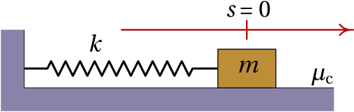
Um cilindro de massa
está pendurado, na vertical, de uma mola
com constante elástica
, tal como na figura 6.2. Em
termos da altura
do centro de massa do cilindro, a partir da
posição em que a mola não está nem esticada nem comprimida, e
desprezando a resistência do ar:
(a) Encontre a equação de movimento, a partir da equação de
Lagrange, ou se preferir, a partir da segunda lei de Newton.
(b) Encontre o valor de
no ponto de equilíbrio.
(c) Mostre que o sistema pode escrever-se como sistema linear,
com uma mudança de variável de
para uma nova variável
e que
a equação de movimento em função de
é a equação de um oscilador
harmónico simples com frequência angular
.
Um cilindro tem base circular de área
cm2, altura
cm e massa volúmica
g/cm3. Como essa massa
volúmica é menor que a da água,
g/cm3, quando o
cilindro é colocado num recipiente com água flutua na superfície, com
uma parte
da sua altura por fora da água, como mostra a figura
(
). Empurrando o cilindro para baixo, começará a
oscilar com
a variar em função do tempo. Use o seguinte
procedimento para analisar a oscilação do cilindro:
(a) Sabendo que a força da impulsão da água, para cima, é
igual ao peso da água que ocupava a parte do volume do cilindro que
está dentro da água, ou seja,
Encontre a expressão para a força resultante no cilindro, em função de
(pode ignorar a força de resistência da água, que é muito menor
que o peso e a impulsão).
(b) Encontre a equação de movimento do cilindro (expressão
para
em função de
).
(c) Encontre o valor de
na posição de equilíbrio do
cilindro.
(d) Mostre que o sistema dinâmico associado ao movimento do
cilindro é linear e encontre a matriz do sistema.
(e) Mostre que o ponto de equilíbrio é um centro, implicando
que o movimento é oscilatório e determine o valor do período de
oscilação do cilindro.
A equação de movimento
, com
,
descreve um oscilador invertido, com dissipação de energia (se
é
negativa) ou com aumento da energia (se
é positiva). Mostre que
a condição
é suficiente para garantir que existem dois valores
próprios reais diferentes, um positivo e o outro negativo,
independentemente do valor de
. Como tal, o ponto de equilíbrio é
sempre ponto de sela.
Num transformador há duas bobinas, a primária, com resistência
e
indutância
e a secundária, com resistência
e indutância
. Quando se liga uma fonte na primeira bobina, produzindo
corrente
nela, na segunda bobina é induzida outra corrente
. Quando se desliga a fonte na primeira bobina, as duas correntes
começam a diminuir gradualmente, de acordo com as seguintes equações:
onde
é a indutância mútua entre as duas bobinas e as constantes
,
,
,
e
são todas positivas.
(a) Escreva as equações do transformador como equações de
evolução de um sistema dinâmico linear e encontre a matriz do sistema.
(b) Num transformador real,
é menor que
. Que
tipo de ponto de equilíbrio terá o sistema no caso
,
,
,
,
(usando unidades que conduzem a valores entre
0 e 10).
(c) Trace o retrato de fase do sistema no caso considerado na
alínea anterior.
(d) Os valores
,
,
,
e
,
correspondem a um caso hipotético que não pode descrever um
transformador real porque
. Diga que tipo de ponto seria
o ponto de equilíbrio nesse caso e explique porque esse sistema não
pode descrever um transformador real.
Um isótopo radioativo A, decai produzindo outro isótopo radioativo B e
este decai produzindo um isótopo estável C.
Sendo
e
o número de isótopos das espécies A e B existentes
em qualquer instante
, as suas derivadas em ordem ao tempo
verificam as seguintes equações:
onde
é a constante de decaimento dos isótopos A (probabilidade
de que um isótopo da espécie A se desintegre durante uma unidade de
tempo) e
é a constante de decaimento dos isótopos B.
(a) Determine a matriz do sistema e os seus valores próprios.
(b) Tendo em conta que as constantes de decaimento
e
são positivas, explique que tipo de ponto pode ser o ponto de
equilíbrio para os possíveis valores dessas constantes.
(c) Se num instante inicial o número de isótopos A, B e C
forem, respetivamente,
,
e
, onde
é o número de Avogadro, quais serão
os valores de
,
e
após um tempo muito elevado?
No sistema dinâmico com equações de evolução:
onde
é um parâmetro real com qualquer valor entre
e
, determine os intervalos de valores de
onde o ponto de
equilíbrio (
) pode ser nó ou foco, atrativo ou repulsivo,
centro ou ponto de sela.
Respostas
Perguntas:1. E. 2. E. 3. B. 4. B. 5. A.
Problemas
(a)
,
,
,
, ponto de sela.
(b)
,
,
,
, nó estável.
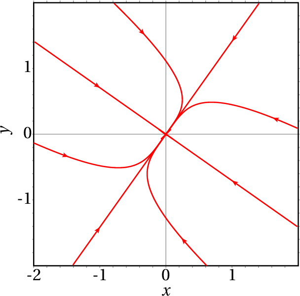
(c)
,
, nó
impróprio instável.
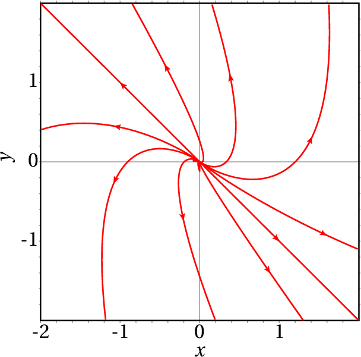
(a) 14 m/s (b) 1400 s-1 (c) 2.24 ms.
(b) O único ponto de equilíbrio é na origem; no entanto, em
todos os pontos, diferentes da origem, no intervalo
o sistema desloca-se em pequenos "saltos" até à origem. Essa situação
peculiar é devida a erro numérico; com intervalos de tempo
suficientemente pequenos o bloco aproxima-se continuamente da
origem. Na prática, existe também atrito estático, que faz com que
todos os pontos no intervalo
sejam, de facto, pontos
de equilíbrio (
).
(a)
(b)
(c) A mudança
de variável é
e a nova equação de movimento é
(a gravidade não interessa) e:
(a)
, em gramas vezes cm/s2,
em
centímetros e admitindo que
é positiva quando a força é para cima.
(b)
(c) 1.6 cm.
(d)
(e) Os dois valores próprios são números imaginários. O período
é 0.762 segundos.
Os dois valores próprios são
e
. Como
é sempre
maior que zero, os dois valores são sempre reais. Como
é diferente de zero, os
dois valores próprios são diferentes. O produto dos dois valores
próprios é
que, por ser negativo, implica
que os dois valores têm sempre sinais opostos.
(a)
A matriz é:
(b) Nó atrativo.
(c) O retrato de fase é:
(d) Ponto de sela. Não pode descrever um transformador real,
porque a instabilidade do sistema implica que com correntes iniciais
finitas as correntes aumentavam até infinito, que não é possível.
(a) A matriz é:
com valores próprios
e
.
(b) Se as duas constantes são diferentes, o ponto de
equilíbrio é nó atrativo, se são iguais, é um nó impróprio atrativo.
(c)
,
e
.
Se
, é ponto de sela. Se
, é nó
atrativo. Se
, é foco atrativo. Se
, é
centro. Se
, é foco repulsivo. E se
, é nó repulsivo.
Pergunta 1, resposta A: Errada
O número de dimensões do espaço de fase deverá ser par, porque por cada
variável de posição existe a respetiva velocidade.
(clique para continuar)
Pergunta 1, resposta B: Errada
A cada dimensão associa-se uma variável de estado (grau de
liberdade). Como tal, o número de variáveis de estado deverá ser maior
do que 2.
(clique para continuar)
Pergunta 1, resposta C: Errada
O número de dimensões do espaço de fase deverá ser par, porque por cada
variável de posição existe a respetiva velocidade.
(clique para continuar)
Pergunta 1, resposta D: Errada
A cada dimensão associam-se duas variáveis de estado (grau de
liberdade e respetiva velocidade).
(clique para continuar)
Pergunta 1, resposta E: Certa
A cada dimensão associam-se duas variáveis de estado (grau de
liberdade e respetiva velocidade).
(clique para continuar)
Pergunta 2, resposta A: Errada
O módulo dos valores próprios (4) é igual à frequência angular do
oscilador. O período obtém-se a partir dessa frequência angular.
(clique para continuar)
Pergunta 2, resposta B: Errada
O módulo dos valores próprios (4) é igual à frequência angular do
oscilador. O período obtém-se a partir dessa frequência angular.
(clique para continuar)
Pergunta 2, resposta C: Errada
O módulo dos valores próprios (4) é igual à frequência angular do
oscilador. O período obtém-se a partir dessa frequência angular.
(clique para continuar)
Pergunta 2, resposta D: Errada
O módulo dos valores próprios (4) é igual à frequência angular do
oscilador. O período obtém-se a partir dessa frequência angular.
(clique para continuar)
Pergunta 2, resposta E: Certa
O módulo dos valores próprios (4) é igual à frequência angular do
oscilador. O período obtém-se a partir dessa frequência angular.
(clique para continuar)
Pergunta 3, resposta A: Errada
Para que o sistema seja linear, a expressão de
deverá
ser uma combinação das duas variáveis de estado,
e
.
(clique para continuar)
Pergunta 3, resposta B: Certa
(clique para continuar)
Pergunta 3, resposta C: Errada
Para que o sistema seja linear, a expressão de
deverá
ser uma combinação das duas variáveis de estado,
e
.
(clique para continuar)
Pergunta 3, resposta D: Errada
Para que o sistema seja linear, a expressão de
deverá
ser uma combinação das duas variáveis de estado,
e
.
(clique para continuar)
Pergunta 3, resposta E: Errada
Para que o sistema seja linear, a expressão de
deverá
ser uma combinação das duas variáveis de estado,
e
.
(clique para continuar)
Pergunta 4, resposta A: Errada
Como
aparece na equação diferencial,
também deveria fazer
parte do espaço de fase.
(clique para continuar)
Pergunta 4, resposta B: Certa
Esta equação diferencial, escrita como sistema de duas equações de
primeira ordem é:
,
, que
é um sistema dinâmico com espaço de fase (
,
), ou seja, (
,
).
(clique para continuar)
Pergunta 4, resposta C: Errada
Esta equação diferencial é equivalente a
, que é
unicamente uma equação de evolução, com uma única variável de estado:
. Como tal o espaço de fase desta equação é o eixo dos
.
(clique para continuar)
Pergunta 4, resposta D: Errada
Como
aparece na equação diferencial,
também deveria fazer
parte do espaço de fase.
(clique para continuar)
Pergunta 4, resposta E: Errada
Como
aparece na equação diferencial,
também deveria fazer
parte do espaço de fase.
(clique para continuar)
Pergunta 5, resposta A: Certa
O traço, 4, é igual à soma dos dois valores próprios e o determinante,
3, é igual ao produto deles. Como tal, os dois valores próprios são 1
e 3, que correspondem a um nó repulsivo ou instável.
(clique para continuar)
Pergunta 5, resposta B: Errada
O traço, 4, é igual à soma dos dois valores próprios e o determinante,
3, é igual ao produto deles. Os dois números que somados dão 4 e
multiplicados dão 3, não podem ser negativos. Como tal, o ponto de
equilíbrio não pode ser estável (atrativo).
(clique para continuar)
Pergunta 5, resposta C: Errada
O traço, 4, é igual à soma dos dois valores próprios e o determinante,
3, é igual ao produto deles. Os dois números que somados dão 4 e
multiplicados dão 3, têm ambos o mesmo sinal. Como tal, o ponto de
equilíbrio não pode ser ponto de sela.
(clique para continuar)
Pergunta 5, resposta D: Errada
O traço, 4, é igual à soma dos dois valores próprios e o determinante,
3, é igual ao produto deles. Os dois números que somados dão 4 e
multiplicados dão 3, são ambos reais. Como tal, o ponto de
equilíbrio não pode ser foco.
(clique para continuar)
Pergunta 5, resposta E: Errada
O traço, 4, é igual à soma dos dois valores próprios e o determinante,
3, é igual ao produto deles. Os dois números que somados dão 4 e
multiplicados dão 3, não podem ser negativos. Como tal, o ponto de
equilíbrio não pode ser estável (atrativo).


 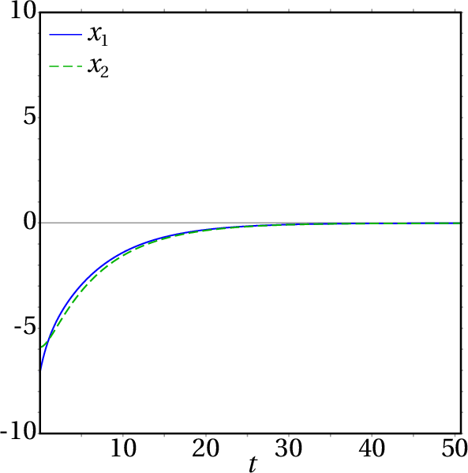
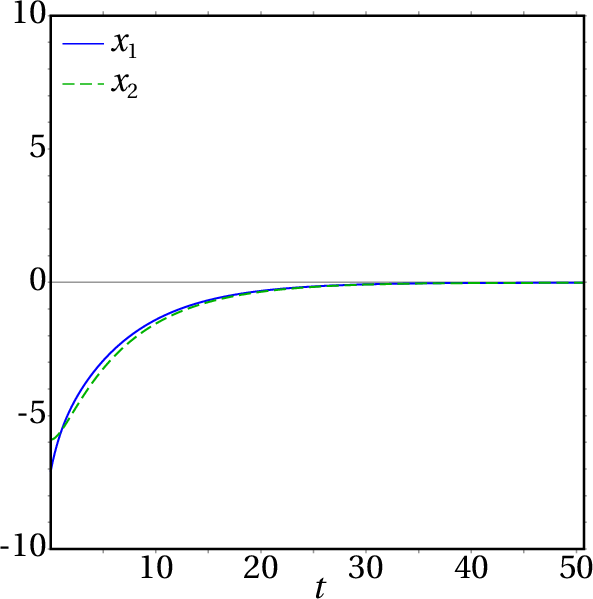


 (d) Ponto de sela. Não pode descrever um transformador real,
porque a instabilidade do sistema implica que com correntes iniciais
finitas as correntes aumentavam até infinito, que não é possível.
(d) Ponto de sela. Não pode descrever um transformador real,
porque a instabilidade do sistema implica que com correntes iniciais
finitas as correntes aumentavam até infinito, que não é possível.
O número de dimensões do espaço de fase deverá ser par, porque por cada variável de posição existe a respetiva velocidade.
(clique para continuar)